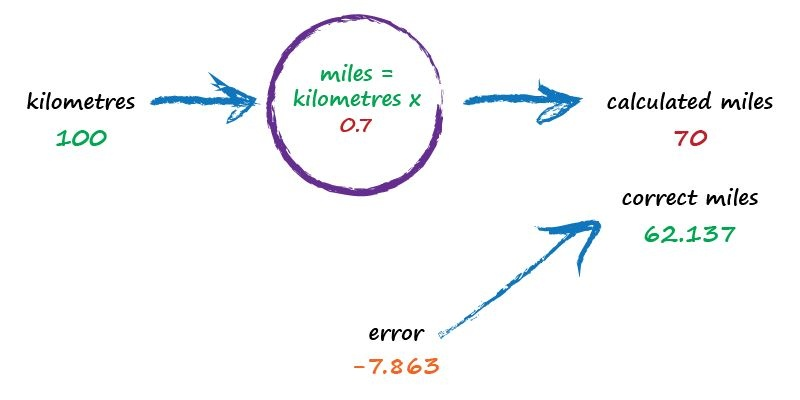

Python 神经网络编程 – 深度学习系列 神经网络入门
Table of Contents
神经网络是如何工作的?
尺有所长,寸有所短
| Q | 计算机 | 人类 |
|---|---|---|
| 快速对成千上万的大数字进行乘法运算 | 简单 | 困难 |
| 在一大群人的照片里查找面孔 | 困难 | 简单 |
- 有些人无,对传统计算机而言很容易,对人类却很难.例如,对百万个数字进行乘法运算.
- 另一方面,有些任务对传统的计算机而言很难,对人类却很容易.例如,从一群人的照片 中识别出面孔.
一台简单的预测机
先从构建超级简单的机器开始了解神经网络中的学习过程.
想象一下,一台基本的机器,接受一个问题,做了一些"思考",并输出了一个答案.这和人 类识别照片时进行的操作一样,我们从眼睛输入图片,使用大脑分析场景,并得出场景中 有哪些物体的结论.那这台机器看起来可能是这样的:
digraph G{
rankdir = "LR";
input [label="问题", shape=plaintext];
machine [label="思考", shape=circle,width=0.75, height=0.75, fixedsize=true];
output [label="答案", shape=plaintext];
input -> machine -> output;
}
但是计算机并不能真正的思考,所以更确切的表述应该是这样的:
digraph G{
rankdir = "LR";
input [label="输入", shape=plaintext];
machine [label="流程\n(计算)", shape=circle,width=0.75, height=0.75, fixedsize=true];
output [label="输出", shape=plaintext];
input -> machine -> output;
}
以计算乘法 "3 × 4" 为例:
digraph G{
rankdir = "LR";
node [width=0.75, height=0.75, fixedsize=true];
input [label="输入\n3×4", shape=plaintext];
machine [label="计算\n4+4+4", shape=circle,width=0.75, height=0.75, fixedsize=true];
output [label="输出\n12", shape=plaintext];
input -> machine -> output;
}
再增加点复杂度,在我们不知道千米和英里转换公式的前提下,要设计一台机器,能够根 据给定的数据将千米转化为英里:
现有条件:
- 我们知道千米和英里之间的关系是线性的.千米数加倍,表示相同距离的英里数也加 倍.即这种关系的形式应为: "英里=千米×C"
我们有正确的千米和英里匹配的数据:
真实示例 千米 英里 1 0 0 2 100 62.137
根据条件,我们计算出常数C, 就能将千米转换成英里. 我们先假设C=0.5, 然后让机器试试:

这里我们得出了一个误差为 62.137-50 = 12.137 的结果.不算太差.
\(error = truth - calculated\\=62.137 - 50\\=12.137\)

我们得出了一个不准确的结果,但是不要灰心,我们可以使用这个结果的误差来指导 我们得出更准确的C的猜测值. 误差值是12.137,由于公式是线性的,所以增加C就可以增加输出,减小误差. 那我们就将 C 从0.5增加到0.6, 得到英里=千米 × 0.6 = 60. 现在,误差值为 2.137,明显变得更小了.
这里重点在于,我们是如何使用误差值的大小指导改变 C 的值.我们希望输出值从 50增大一点,所以稍微增加了C 的值.我们不需要使用代数方法计算出 C 需要改变 的确切量.我们可以继续使用刚刚的方法改进 C 值.
如果实在是想要计算出确切的 C 值,那就要考虑一下,实际上遇到的更多的问题都 是无法使用一个简单的数学公式将输出和输入关联起来的.这就是我们需要使用诸 如神经网络这样相对成熟而复杂的方法的原因.
那让我们继续调整 C 的值,既然0.6还是太小,我们可以将其调整到0.7:

结果超过了正确答案,误差值为-7.863(真实值-计算值=62.137-70),这个负号告诉我们,C
的调整已经太过了,我们通常称参数的这种调整过度现象叫 超调.如此看来,0.6比0.7要
好,那我们可以就此结束,接受C=0.6 带来的小误差,但是,我们也可以使用一个更小的量,来
调整 C ,之前我们都是以 \(10^{-1}\) 的量级来调整,现在我们使用 \(10^{-2}\) 的量级
来调整,我们选 C = 0.61来看看结果如何?

这次比前面的答案都要好,得到输出值61,误差值仅为1.137.
最后这次尝试能告诉我们的是,应该适度调整 C 的值,并且,随着输出值越来越接近正确
答案,即误差值越来越小,我们就不必使用大的调整,这样,就可以避免像先前那样 超调 .
这么多尝试的步骤,都只是为了体现一个持续细化误差值的思想,事实上,我们都会建议 修正值取误差值的百分之几来进行调整. 直觉上,我们这样做是对的,因为,大的误差意 味着需要大的修正值,小误差意味着我们只需要小小地微调.
实际上,神经网络中"学习" 的核心过程就是刚才我们所做的事情. 我们训练机器,让其 输出值越来越接近正确的答案.
上面我们并未使用学校里解决数学问题时一步到位,精确求解问题,而是尝试直接得到答
案,并多次改进答案,这是一种非常不同的方法,有人称之为 迭代 ,意思是持续地,一点
点地改进答案.
- 所有计算机系统都有输入和输出,并在输入和输出之间进行某种计算.神经网络也是一 样.
- 当我们不能精确知道事情如何运作(公式?)时,我们可以尝试使用模型来估计其运作方 式,在模型里,包括了我们可以调整的参数.就像我们不知道如何将千米转化为英里,我 们使用线性函数作为模型,并且使用可调节的梯度(斜率C)作为参数.
- 改进模型的
一种好方法是, 基于模型和已知真实示例之间的比较,得到模型偏移的误 差值,再根据误差值调整参数 .
分类器与预测器并无太大差别
上面的简单机器接受了一个输入,并作出应有的预测,输出结果,我们将其称为预测器.根 据结果与已知真实示例进行比较所得出的误差,调整内部参数,使得预测更加精确. 现在,我们来看看两种小虫子的宽度和长度:

红色的是毛虫,细而长,绿色的是瓢虫,宽而短.回想上面试图找到正确英里数的预测器,其 核心是一个可调节的线性函数.当绘制函数图像时,线型函数输出的是直线,可调参数 C 改变直线的斜率. 如果我们在这个虫子的长宽关系图里画一条直线,会发生什么呢?
如果上图的直线能将毛虫和瓢虫划分开,那么这条直线就可以根据测量值来对未知的小虫 子进行分类.单由于一半的毛虫和瓢虫在分界线的同一侧,因此上图中的直线并不能做到 这一点. 我们再次调整斜率:

这次的结果更差,完全没有区分. 那就再来试一次:
这一条直线就好多了,可以整齐的将瓢虫和毛虫区分开来.那么,我们就可以将这条直线作 为小虫的分类器.
我们假设没有其他类型的虫子(只有毛虫和瓢虫),因为我们只是借此说明构建一台简单分 类器的思路.
设想下,当计算机使用机械臂抓起一只新的小虫子,测量其宽度和长度之后,就可以使用上 面最后一个分界线,来将虫子归类为毛虫或瓢虫.就像下图所示:
我们已经看到了在简单的预测器里,使用线性函数来对未知的数据进行分类. 但是最重要的一点, 是我们如何得到正确的斜率呢? 根据之前的思想,我们该如何改进分 界线,才能更好的划分这两种小虫呢?
这个问题的答案就是神经网络学习的核心. 让我们继续.
训练简单的分类器
上一节我们构思了一种线性分类器,能够正确分类瓢虫和毛虫,根据上节图示,我们可以观 察到,想要实现这样一种分类器,重点在于调整分界线的斜率,使其能够基于小虫的宽度和 长度将两组点划分开来.
我们不能上来就使用最前沿的先进数学理论,让我们先试着摸石头过河,这样我们可以更 好的了解数学.
我们也确实需要一些实例来训练.为了使这次练习简单点,下表只包含了两个实例:
| 实例 | 宽度 | 长度 | 小虫 |
| 1 | 3.0 | 1.0 | 瓢虫 |
| 2 | 1.0 | 3.0 | 毛虫 |
这组数据是正确的.这些实例帮助我们调整分类函数的斜率. 用来训练预测器或分类器的
真实实例 ,我们称之为 训练数据
通过数字和表格不容易理解和感知数据,而可视化数据有助于我们做到这一点,因此让我 们先根据表格绘制出训练数据的图像:
和千米转英里的例子类似,这里的分界线也是一条直线,我们进行类似的处理:
\(y=Ax\)
这条直线严格来说不是预测器,因此没有使用宽度和长度,而是用y,x. 这条直线是一条分 界线,这是一台分类器. 这里给出的直线形式也比直线的一般形式 \(y=Ax+b\) 要简单,这是因为这里刻意使分类小 虫的场景简化了.也就是我们假定在该场景直线不过座标原点的情况没有意义,毕竟这是 演示用,不是真实情景.
好了,我们可以开始操作了,之前我们就知道,参数A是控制直线的斜率的,较大的A对应较 大斜率.
让我们和之前一样先尝试给 A 赋值. 令 A = 0.25,即 \(y=0.25x\). 让我们绘制出他的图 像,来看看效果如何.
不用计算就可以直接观察出,这条直线并不能将两种类型虫子区分开.毛虫和瓢虫代表的 点都处于直线之上.所以我们不能得出"如果小虫在直线之上,那么它就是毛虫"这样的结 论.
直觉告诉我们,我们需要将直线向上移动一点,但是我们不能这样做,我们不能通过观察就 画出一条适合的直线,毕竟我们最终的目的是找到一种可以重复的方法,通过计算机指令 来达到这个目标,计算机科学家将这一系列计算机指令称之为算法. 通俗的讲,我们是要 教会计算机去找出这条直线,而不是通过我们的"直觉"或观察来画出直线.
我们来观察第一个样本数据,宽为3.0,长为1.0 的瓢虫,如果我们使用尝试的第一个分界 线函数: \(y=0.25x\) ,我们会得到 \(y=0.25*3.0=0.75\), 表示对于宽3.0的小虫,长度应该 为0.75, 但是训练数据告诉我们,真实的长度应该为 1.0, 我们就知道这个数字太小了.现 在,我们有了误差了,根据前面的经验,我们可以根据误差来搞清楚如何调整参数A.
调整 A 之前,我们要先考虑下 y 应该是什么值,如果 y 为 1.0 那分界线会经过该点 \((x, y)= (3.0, 1.0)\) . 但是实际上,我们不希望出现这样的点,因为这条分界线是用来 给两种虫子分类的,我们希望直线能将两种虫子分开,而不是虫子代表的点出现在直线上.代 表虫子的点出现在直线上是训练一个给定小虫宽度,预测小虫长度的预测器时希望出现的 情况. 根据之前的图示,我们希望代表瓢虫的点能在直线下方,因此当 \(x=3.0\) 时,我们希望 y 能比1.0大一点, 那我们就先选取 y=1.1 来试一下.我们选1.1是因为它真的只比1.0大一 点,我们还可以选1.2或1.3,单我们不希望使用50,100这样的大数字,因为这会使直线在所 有虫子上方,导致这个分类器没有作用.
因此,当 \(x=3.0\) 时,我们的期望值 \(y=1.1\) 实际输出值 \(y=0.75\), 那么:
\(误差值E=(期望目标值-实际输出值)=1.1-0.75=0.35\)
我们先暂停一下,将误差值,期望值,和计算值的意义在图里表示出来:
通过之前的实验,我们得出了要使用误差值来指导参数的调整的思想,之前的调整我们都 是凭直觉来进行较大或较小的调整.到了这里我们就要更近一步了,找出参数 A 的修正值 和误差值之间的关系,找到了二者的关联,我们就可以理解一个值如何影响另一个值了.
先从分类器的函数开始:
\(y=Ax\)
我们给定A的初始猜测值,计算出了错误的 y 的计算值,而实际正确的 y 值是基于样本数 据的.我们将正确的期望值 t 称之为目标值,为了得到 t 的值,我们需要稍微调整 A 的 值.数学上使用增量符号 \(\Delta\) 表示"微小的变化量". 那么 t 就可以表示成:
\(t=(A + \Delta{A})x\)
将其绘制成图像更容易理解:
再次重申,误差值是期望值减去计算值计算出来的差值,也就是说 E 等于 t-y:
\(t-y=(A + \Delta{A})x - Ax=\Delta{A}x\)
所以, \(E=\Delta{A}x\).
既然我们想知道的是根据误差值如何指导参数的修正,那么将方程调整一下,得到:
\(\Delta{A}=E/x\)
有个这个表达式,我们就可以根据误差值E, 得到参数所需要的调整值 \(\Delta{A}\) 了.
Let's do it!
误差值为 0.35,x 为3.0,那么 \(\Delta{A}=E/x=0.35/3.0=0.1167\). 也就是说,当前的 A=0.25 需要加上 0.1167,那么修正后的 \(A=A + \Delta{A}=0.25+0.1167=0.3667\), 使 用这个 A 值,进行计算,得到的 y 值为1.1,这就是我们所期望的目标值.
现在我们完成了一个实例训练,让我们再根据下一个实例训练学习.此时,我们已知正确的 x=1.0,y=3.0, 更新后的A=0.3667.
当把 x=1.0 带入线性函数中去,我们观察结果.此时我们得到 y=0.3667, 与样本数据中 y=3.0 差了很多,根据先前相同的推理,我们希望直线不经过点,而是稍高或稍低于数据点,我 们将期望值设置为 \(y=2.9\). 这样,毛虫的样本点就位于直线上方,而不是直线上. 基于 此,误差值 \(E=2.9-0.3667=2.5333\).
和第一次相比,这个误差值更大,但仔细想想,到现在为止,我们都只使用了一个单一的样 本对线性函数进行训练,很明显,这使得直线每次都偏向于这个单一的样本.
那我们还是继续改进 A. \(\Delta{A}=E/x=2.5333/1.0=2.5333\), 那么 \(A=0.3667+2.5333=2.9\). 这意味着,对于 \(x=1.0\), 函数得出2.9的答案,这就是我们期 望的值.
让我们来看看已经取得的训练成果:

发现了啥?直线并没有像我们希望的那样整齐的划分出毛虫和瓢虫.每次修正后的分界线 都偏向于修正时用到的样本数据点.这是为什么呢?
我们使用了所有训练数据样本来进行改进,但是我们上面的做法会让每一次改进的结果都 和最后一次训练数据样本点非常匹配,发现了吗?每次的改进都与其他的样本点无关,因为 我们根本就没用到其他训练数据样本点,有人可能会想,第二次 A 的初始值不就是第一次 的改进结果吗?那我们想想第一次 A 的初始值是怎么来的?我们只是随机选择了一个数, 而第二次的训练只不过是重复第一次的改进操作.也就是说,我们每次改进的结果,都抛弃 了之前的训练成果,而只是对最近一次实例数据进行了学习训练.
这个问题如何解决呢?
答案很简单! 机器学习里,一个重要的思路就是:我们要进行 适度改进(moderate), 也就 是说,我们不要过于激烈地改进.
让我们使用 \(\Delta{A}\) 几分之一的变化值,而不是采用整个 \(\Delta{A}\), 每次都跳 跃到一个新的值.
使用这种方法,我们可以小心谨慎地向训练样本所只是的方向移动,并且在训练中保持了 先前训练迭代周期中所得到值的一部分. 千米和英里的转换的预测器中,我们就意识到了 这种有节制的调整,我们小心翼翼地调整参数,使其只是实际误差值的几分之几.
这种有节制的调整,还带来了一个非常强大的 "副作用".那就是在训练数据本身并不能保 证完全正确,或者包含现实世界中测量普遍会出现的错误或噪声时,这种适度改进可以抑 制这些错误或噪声的影响. 这种方法使得错误或噪声得到了调解和缓和.
我们来改进下修正值的公式,原本的公式: \(\Delta{A}=E/x\), 改进后: \(\Delta{A}=L(E/x)\).
这种调节系数通常被称为 学习率(learning rate), 这里,我们把它叫做L.
我们先挑一个 \(L=0.5\) 来做为一个合理的系数开始学习的过程,简单地说,就是每次更新 原更新值的一半.
使用添加了学习率的公式来重新训练分类器. 初始值 \(A=0.25\), 使用第一个训练样本点, \(y=0.25 * 3.0=0.75\) ,期望值 \(t=1.1\), 误差值 \(E=1.1-0.75=0.35\). \(\Delta{A}=L(E/x)=0.5*(0.35/3.0)=0.0583\). 那么更新后的 \(A=0.25+0.0583=0.3083\). 尝试使用新的 A 值来计算下第一个训练样本点, \(x=3.0,y=0.3083 * 3.0=0.9250\). 现 在,这个值小于1,因此,直线落在样本点错误的一边,但是,如果把这视为后续众多调整步 骤中的第一步,则这个结果并不算太差,因为和初始的直线相比,这条直线确实是向正确的 方向在移动.
使用新的 A 值来继续训练,第二个样本点, \(y=0.3083* 1.0 = 0.3083\), 期望值 \(t=2.9\), 误差值 \(E=t-y=2.9-0.3083=2.5917\). \(\Delta{A}=L(E/x)=0.5*(2.5917/1.0)=1.2958\). 那么 第二个更新后的 \(A=0.3083+1.2958=1.6042\).
- TODO 我们再次观察添加了学习率之后进行的训练结果的图像:
即使使用两个简单的训练样本,利用带有调节学习速率的一种相对简单的改进方法,我们 也迅速地得到了一条很好的分界线 \(y=Ax,A=1.6042\)
- 我们知道了在何种程度上调整斜率,可以消除输出误差.
- 使用朴素的调整方法会导致改进后的模型只与最后一次训练的样本最匹配,忽略了所 有以前的训练样本.解决问题就是使用 学习率,调节改进速率,这样就可以使单一的训 练样本不能主导整个学习过程.
- 真实世界的训练样本可能充满噪声或包含错误,适度改进(moderate) 可以限制这些错 误样本的影响.
有时候一个分类器不足以求解问题
- 如果数据本身不是由单一线性过程支配,那么一个简单的线性分类器不能对数据进行划 分.例如由逻辑 XOR 运算符支配的数据.
- 解决方法就是使用多个线性分类器划分由单一直线无法分离的数据.
神经元–大自然的计算器
计算机有大量电子计算元件,巨大存储空间,并且计算机的运行频率比生物大脑要快得多, 但即使是像鸽子一样小的大脑,能力也远大于电子计算机. 传统计算机的按照严格的串行顺序,相当准确具体地处理数据.对计算机来说,不存在模糊 性和不确定性.另一方面,生物大脑虽然看起来运行得慢得多,但似乎是以并行方式处理信 号, 模糊性 是其计算的一种特征. 神经元图像: 神经元有各种形式,但所有神经元都是将电信号从一端传输到另一端,沿着轴突,将电信号 从树突传到树突.这些电信号从一个神经元传送到另一个神经元,这就是身体感知光,声, 热等信号的机制.专门的感觉神经元的信号沿着神经系统,传输到大脑,而大脑本身也主要 是由神经元构成的.